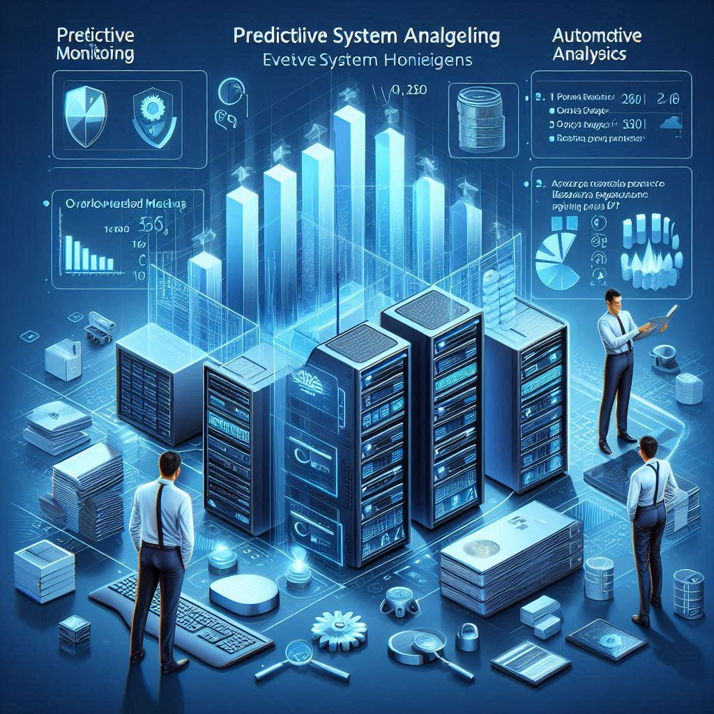
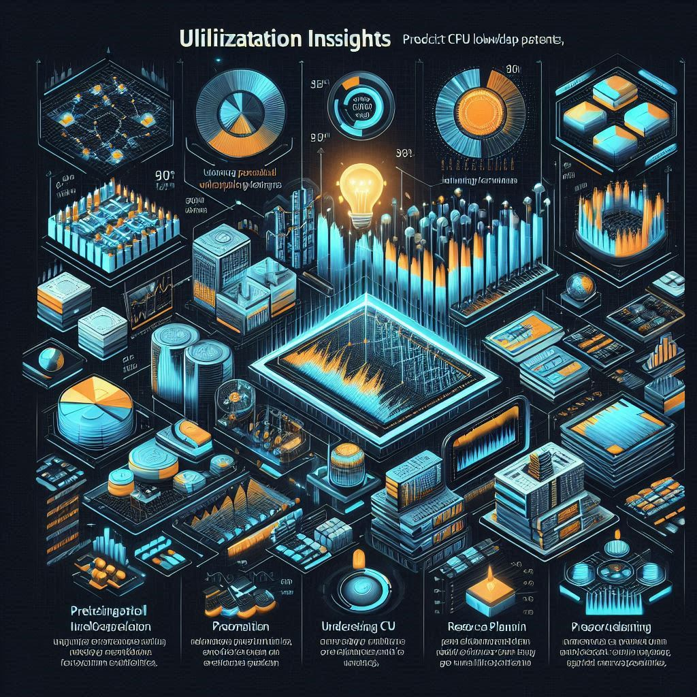
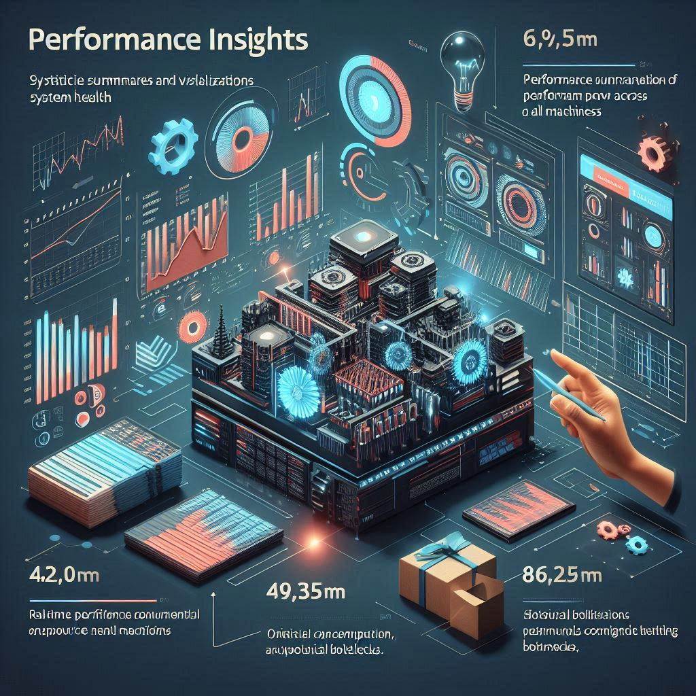

VM Manager
VM Manager is a convenient tool for centralized management of computing and network resources. Manage a virtual environment to host any company services.

VM Monitor
CoreVitals
Menu

PREDICTIVE ANALYSIS
ANOMALY DETECTION
PROACTIVE ALERTS

UTILIZATION INSIGHTS

PERFORMANCE INSIGHTS
DECISION SUPPORT
Predictive Analysis
Effective system health monitoring prevents performance issues, downtime, and resource failures. The two major concerns in system performance management are overloaded machines and resources near depletion. Proactive monitoring, predictive analytics, and automated scaling ensure systems remain efficient and reliable.
Overloaded Machines
- High CPU Usage: When CPU usage exceeds safe thresholds, applications slow down, response times increase, and system performance degrades. Solutions include optimizing process execution, redistributing workloads, and implementing load balancing.
- Memory Overload: Memory overload occurs when RAM consumption exceeds available capacity, leading to frequent swapping, slow performance, or application crashes. Preventive measures include optimizing database queries and implementing caching mechanisms.
- Disk Overutilization: Disk space exhaustion slows down read/write operations. Preventive strategies include automating log cleanup and expanding storage capacity.
- Threshold-Based Alerts & Scaling: Automated alerts and dynamic scaling prevent system overload by ensuring timely intervention.
Resources Near Depletion
- Disk Space Prediction: Running out of disk space causes failed transactions and system crashes. Solutions include scheduled log rotation and data archiving.
- Memory Utilization Forecasting: Memory shortages impact system stability. Solutions include optimizing memory-intensive operations and implementing intelligent caching strategies.
- Predictive Analytics for Resource Management: Machine learning-based predictive analytics enhances system monitoring by analyzing past trends and forecasting future resource needs.
Anomaly Detection
Anomaly detection is a critical aspect of system monitoring that helps identify unexpected behavior, sudden resource spikes, and potential failures before they impact operations. By analyzing patterns in system performance, anomaly detection tools can detect unusual CPU, memory, disk, or network activity, allowing administrators to take corrective action before issues escalate.
- Sudden Spikes in Resource Utilization: A sudden increase in CPU, memory, or disk usage often indicates unoptimized processes, excessive background tasks, or malicious activities such as a cyberattack or a faulty update. If left unaddressed, these spikes can lead to system slowdowns, crashes, or security vulnerabilities. Continuous monitoring helps detect anomalies in real time, triggering alerts that allow quick intervention. Preventive measures include load balancing, process optimization, and security audits to ensure that resource spikes do not disrupt operations.
- Unexpected Downtime:Unexpected system failures, server crashes, or application freezes can disrupt business operations and result in data loss. Anomalies in system logs, error rates, or API response times often indicate an impending failure or configuration issue. Machine learning models trained on historical data can predict failures before they occur, allowing administrators to take preventive actions such as infrastructure scaling, patching, or restarting failing services.
- Unusual Network Activity: Abnormal spikes in network traffic, unexpected data transfers, or frequent failed authentication attempts may indicate a DDoS attack, unauthorized access, or a misconfigured service. Detecting anomalies in network logs helps prevent security breaches and ensures data integrity. Implementing firewall rules, intrusion detection systems (IDS), and automated response mechanisms can mitigate risks and prevent unauthorized system access.
- Predictive Anomaly Detection Using AI: Advanced machine learning algorithms analyze system metrics over time to detect anomalies before they cause failures. Time-series forecasting models can identify deviations from normal behavior, while unsupervised learning techniques such as clustering and autoencoders help uncover hidden patterns in system logs. By integrating AI-driven anomaly detection, organizations can enhance monitoring accuracy, reduce manual workload, and improve response times to potential threats.
Click "Detect Anomalies" to view which machine is about to fail...
Proactive Alerts
Proactive alerts enable real-time detection of critical system conditions, allowing administrators to take preventive action before issues impact performance. Unlike reactive alerts, which notify users after a failure occurs, proactive alerts predict potential failures and trigger warnings based on historical trends, predefined thresholds, and anomaly detection mechanisms. These alerts help maintain system stability, prevent downtime, and optimize resource utilization.
- Predictive Memory Utilization AlertsMemory-intensive applications can lead to performance degradation if consumption exceeds safe limits. Proactive alerts analyze historical memory usage trends and predict when utilization is likely to surpass a critical threshold. By detecting early warning signs, such as a steady increase in memory consumption or frequent swapping, alerts allow administrators to optimize resource allocation, clear unnecessary processes, or scale memory resources dynamically before the system slows down or crashes.
- CPU and Load Monitoring Alerts:High CPU usage can cause delays, application failures, or complete system unresponsiveness. Proactive alerts monitor CPU load over time, detecting unusual spikes or consistent overutilization. If an alert predicts that CPU usage will exceed a critical level within a specific timeframe, administrators can optimize workload distribution, enable auto-scaling, or adjust process priorities to prevent system slowdowns. These alerts help maintain performance efficiency and prevent overload-related crashes.
- Disk Space Utilization Alerts: Running out of disk space can lead to failed write operations, application errors, and data loss. Proactive disk space alerts analyze usage trends to estimate when available storage will be exhausted. Instead of waiting for storage to run out, these alerts notify teams well in advance, enabling automated log cleanup, data archiving, and storage expansion before disk depletion affects system operations.
- System Uptime & Stability Alerts:Frequent restarts, unplanned downtimes, or irregular uptime patterns may indicate hardware failures, unstable configurations, or software bugs. Proactive uptime alerts monitor system health and detect irregular shutdown patterns before they escalate into major outages. By identifying systems with recurring instability, these alerts help administrators troubleshoot hardware issues, patch software vulnerabilities, and optimize infrastructure for improved reliability.
- Automated Alerting and Response Systems:Proactive alerts become more effective when combined with automated incident response mechanisms. AI-powered monitoring tools can analyze alerts in real-time and trigger automated responses, such as scaling resources, restarting services, or blocking suspicious activities. This reduces manual intervention and ensures faster resolution of potential issues.
Click "Set Alerts" to view live alerts...
Utilization Insights
This helps predict future workload patterns and resource demands for each machine, enabling efficient load balancing, capacity planning, and proactive resource allocation. By analyzing historical usage trends, seasonal variations, and real-time metrics, organizations can anticipate demand spikes, optimize infrastructure, and prevent resource shortages before they impact performance.
- Predicting CPU Workload Trends:Understanding CPU usage patterns helps ensure optimal processing efficiency and prevent overloads. By analyzing past CPU utilization data, forecasting models can predict periods of high demand, underutilization, or potential bottlenecks. This allows administrators to pre-allocate resources, optimize task scheduling, and enable dynamic CPU scaling to handle expected workloads without overprovisioning.
- Memory Consumption Forecasting:Predicting memory usage helps prevent unexpected slowdowns and application crashes. Memory forecasting models analyze growth patterns in active processes, caching behavior, and memory leaks to determine future consumption rates. This enables preemptive memory allocation, early detection of inefficient processes, and proactive adjustments to avoid performance degradation.
- Disk Space and Storage Demand Estimation:Running out of disk space can cause data loss, application errors, and operational failures. Forecasting models evaluate storage trends by analyzing file growth rates, log accumulation, and database expansion. This allows organizations to automate storage expansion, schedule log cleanup, and optimize data retention policies to prevent sudden storage depletion.
- Network Traffic and Bandwidth Prediction:Fluctuations in network traffic can affect latency, data transfer speeds, and system responsiveness. Forecasting models track historical bandwidth usage, peak traffic hours, and application demands to predict future network loads. This enables proactive scaling of network resources, load balancing, and bandwidth allocation to maintain stable performance during high-traffic periods.
- AI-Powered Predictive Analytics for Load Balancing:Machine learning algorithms enhance forecasting accuracy by identifying hidden trends and anomaly patterns in resource utilization. AI-driven models can predict workload shifts in multi-cloud, hybrid, and on-premises environments, enabling real-time load balancing, intelligent resource scaling, and optimized infrastructure management.
Performance Insights
Performance insights provide statistical summaries and visualizations of system health across all machines, offering a clear understanding of performance trends, resource consumption, and potential bottlenecks. By leveraging real-time monitoring, historical analysis, and graphical representations, organizations can identify inefficiencies, optimize resource allocation, and enhance overall system stability.
- System-Wide Performance Metrics:Comprehensive performance summaries display CPU load, memory utilization, disk activity, and network traffic for all machines in the system. These insights help identify high-resource-consuming nodes, detect anomalies, and analyze workload distribution. By tracking key performance indicators (KPIs) over time, administrators can recognize long-term trends and optimize system efficiency.
- Interactive Visualizations and Dashboards:Graphical dashboards enhance data interpretation by presenting performance metrics in charts, heatmaps, and trend lines. These visualizations make it easier to spot recurring patterns, sudden spikes, or resource imbalances across different machines. Interactive dashboards allow users to filter data, drill down into specific metrics, and compare historical vs. real-time performance for better decision-making.
- Bottleneck Identification and Trend Analysis:By analyzing historical performance trends, organizations can detect recurring issues such as slow processing, memory leaks, or inefficient storage usage. Identifying these bottlenecks allows teams to take proactive measures, such as load balancing, optimizing queries, or scaling infrastructure before performance issues escalate.
- Predictive Performance Insights:AI-driven analytics provide forecasted system behavior, helping teams anticipate resource shortages, predict failure points, and prepare for high-demand periods. These insights enable automated capacity planning, workload redistribution, and proactive system optimization to prevent downtime and maintain efficiency.
Decision Support
Decision support systems provide actionable recommendations based on predicted system issues, enabling administrators to make informed choices that enhance performance, stability, and efficiency. By analyzing resource utilization trends, anomaly patterns, and predictive analytics, decision support mechanisms help proactively resolve potential problems before they impact operations.
- Intelligent Workload Reallocation:When system performance predictions indicate an overloaded CPU, memory bottleneck, or uneven resource distribution, decision support suggests shifting workloads to underutilized nodes. This ensures optimal processing efficiency, prevents performance degradation, and reduces the risk of system crashes. Workload balancing strategies may involve auto-scaling, container orchestration, or dynamic task scheduling.
- Resource Scaling and Capacity Expansion: Predictive analytics detect when a system is approaching resource exhaustion, such as disk space running low, memory nearing capacity, or network bandwidth congestion. Based on these insights, decision support recommends adding resources, upgrading hardware, or allocating additional cloud instances to maintain smooth operations. Scaling strategies can include vertical scaling (upgrading existing machines) or horizontal scaling (adding more machines).
- Configuration Optimization for Performance Efficiency:Suboptimal system configurations can lead to slow response times, inefficient resource usage, and increased downtime. Decision support analyzes historical performance data and real-time metrics to recommend tuning parameters, adjusting caching mechanisms, optimizing database queries, or refining system policies. These improvements enhance overall system responsiveness and reduce unnecessary resource consumption.
- Automated Decision-Making with AI Integration:AI-driven decision support systems use machine learning algorithms to provide real-time recommendations and even automate corrective actions. By continuously learning from system behavior, AI can predict potential failures, suggest preemptive actions, and trigger automated responses, such as scaling resources, restarting failing services, or reallocating traffic loads to maintain performance stability.
Click to view workload distribution...